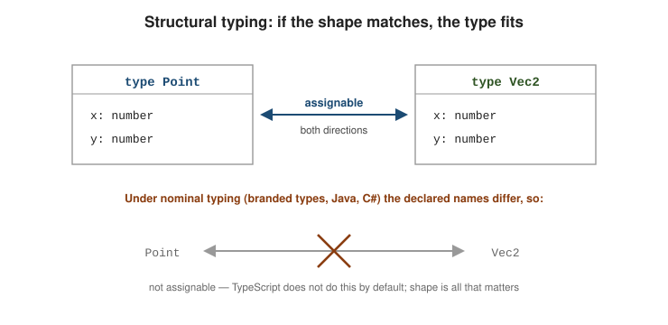
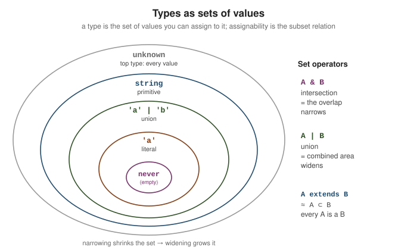

The Type System
|
This content was generated with the assistance of AI and should be verified against the official documentation before being relied on in production. |
TypeScript layers a static type system over JavaScript’s runtime values. Three ideas explain most of its behaviour: types are compared by shape rather than by name, every type is a set of values, and type expressions live in a separate namespace from ordinary expressions. This page covers those three, plus the everyday choice between letting a type be inferred, annotating it, or asserting it.
Structural typing
TypeScript uses structural typing: a value is assignable to a type when it has (at least) the required members with compatible types. The declared name of the type is irrelevant. This is the opposite of the nominal typing used by Java or C#, where two classes with identical members are still distinct types.
type Point = { x: number; y: number };
type Vec2 = { x: number; y: number };
const p: Point = { x: 1, y: 2 };
const v: Vec2 = p; // OK -- same shape, so Point is assignable to Vec2
const q: Point = v; // OK -- assignable the other way too
// A plain object literal with the right shape fits as well:
function length(pt: { x: number; y: number }): number {
return Math.hypot(pt.x, pt.y);
}
length({ x: 3, y: 4 }); // 5
Extra members are allowed when the source is a variable — its type is simply a subtype — but not when the source is a fresh object literal. That case triggers excess-property checking, a deliberate exception meant to catch typos in options bags.
interface Options { width: number; height?: number }
const base = { width: 10, colour: "red" };
const a: Options = base; // OK -- excess `colour` ignored for a variable
const b: Options = { width: 10, colour: "red" }; // Error -- excess property on a literal
// Object literal may only specify known properties, and 'colour' does not exist in type 'Options'.Reading an assignability error. TypeScript reports the outermost mismatch first, then drills in with "Types of property '…' are incompatible" lines. The last, most-indented line is the root cause — read it from the bottom up.
Type '{ x: number; y: string; }' is not assignable to type 'Point'.
Types of property 'y' are incompatible.
Type 'string' is not assignable to type 'number'.See Type Compatibility for the full rules, and Everyday Types for the object-type syntax used above.
Types as sets of values
Every type is the set of values that inhabit it. Assignability is the subset relation, and the type operators are set operators.
| Type | Set of values |
|---|---|
|
|
|
exactly one value, the string |
|
two values |
|
every string |
|
every value — the universal set |
type Nothing = never; // {}
type Lit = "a"; // {"a"}
type Pair = "a" | "b"; // {"a", "b"}
type Prim = string; // all strings
type Top = unknown; // everything
const x: Pair = "a"; // OK -- "a" is in the set
// const y: Pair = "c"; // Error -- "c" is not in {"a", "b"}
| is union: it widens, producing the combined set. & is intersection: it narrows, producing
only the values present in both sets.
type A = { id: number };
type B = { name: string };
type Both = A & B; // { id: number; name: string } -- must satisfy both
const ab: Both = { id: 1, name: "z" };
type Either = A | B; // only `id`, or only `name`, is guaranteed present
type Impossible = "a" & "b"; // never -- no value is both "a" and "b"A extends B in a constraint or conditional type is roughly "A is a subset of B": every value of A is
also a value of B.
type IsString<T> = T extends string ? "yes" : "no";
type R1 = IsString<"hello">; // "yes" -- {"hello"} is a subset of all strings
type R2 = IsString<number>; // "no"Unions and Narrowing covers how control-flow analysis shrinks these sets at runtime.
How the checker decides assignability
Every error in the sections above is the output of one question the compiler asks at assignments, calls and returns: is the source type assignable to the target type? The answer is computed structurally, member by member, and the same recursive procedure applies at every level of nesting.
or S is never?"} A -->|yes| YES["assignable"] A -->|no| U{"S is a union?"} U -->|"yes: every member must fit"| EACH["check each member of S against T"] U -->|no| TU{"T is a union?"} TU -->|"yes: at least one must fit"| ANY["check S against each member of T"] TU -->|no| OBJ{"both object types?"} OBJ -->|yes| PROP["for every property of T:
S has it, with an assignable type"] OBJ -->|"functions"| FN["parameters (contravariant under strictFunctionTypes),
return type (covariant)"] PROP --> FRESH{"S is a fresh object literal?"} FRESH -->|yes| EXCESS["also reject properties T lacks"] FRESH -->|no| YES
Four consequences of that procedure explain behaviour that otherwise looks inconsistent.
Extra members are fine, missing members are not
Working with the User shape from the worked example,
PublicUser is Omit<User, "passwordHash">. A full User can be passed anywhere a PublicUser is expected,
because it has every property the target needs:
interface User { id: string; name: string; email: string; passwordHash: string }
type PublicUser = Omit<User, "passwordHash">;
declare const user: User;
const pub: PublicUser = user; // ok: the extra member is on a variable
function show(u: PublicUser) { return u.name; }
show(user); // ok
show({ id: "1", name: "a", email: "e", passwordHash: "x" }); // errorts1.ts(7,40): error TS2353: Object literal may only specify known properties, and 'passwordHash' does not exist in type 'PublicUser'.This is also a runtime lesson: show(user) still hands the function the password hash, because assignability never
removes anything. Types hide members from the checker, not from the program, so a PublicUser parameter is not a
security boundary. Construct a new object when a member must really be dropped.
Names do not matter, but private members do
Two unrelated classes with the same public shape are interchangeable, which is the surprise for anyone coming from
Java or C#. Declaring a private or #private member makes a class nominal in practice, because only the
declaration that introduced the member can satisfy it:
class Meters { constructor(public value: number) {} }
class Feet { constructor(public value: number) {} }
const m: Meters = new Feet(3); // ok! same shape
class Secret { #k = 1; private z = 2; }
class Secret2 { #k = 1; private z = 2; }
const s: Secret = new Secret2(); // error
class Open { private z = 2; }
const o: Open = { z: 2 }; // errorts1.ts(14,7): error TS2322: Type 'Secret2' is not assignable to type 'Secret'.
Property '#k' in type 'Secret2' refers to a different member that cannot be accessed from within type 'Secret'.
ts1.ts(16,7): error TS2322: Type '{ z: number; }' is not assignable to type 'Open'.
Property 'z' is private in type 'Open' but not in type '{ z: number; }'.The first line is why Meters and Feet need a brand if you want the compiler to keep them apart (see
Type Design and Best Practices).
Functions: parameters flow the other way
Return types are covariant (a function returning a Dog can stand in for one returning an Animal), but
parameters are contravariant: a function that accepts any Animal can stand in for one that handles only dogs,
and not the reverse. Under strictFunctionTypes (part of strict) the checker enforces that for function-typed
values:
class Animal { name = "a"; }
class Dog extends Animal { bark() {} }
declare let handleAnimal: (a: Animal) => void;
declare let handleDog: (d: Dog) => void;
handleDog = handleAnimal; // ok: handles more than required
handleAnimal = handleDog; // error: might receive a plain Animalts1.ts(24,1): error TS2322: Type '(d: Dog) => void' is not assignable to type '(a: Animal) => void'.
Types of parameters 'd' and 'a' are incompatible.
Property 'bark' is missing in type 'Animal' but required in type 'Dog'.There is one deliberate exception: parameters of methods declared with method syntax (m(a: Animal): void) are
still compared bivariantly, because many everyday patterns (an Array<Dog> being passed where Array<Animal> is
expected, event handler maps) would otherwise be rejected. A property declared as a function type
(p: (a: Animal) => void) gets the strict check:
declare const bd: { m(d: Dog): void; p: (d: Dog) => void };
const bx1: { m(a: Animal): void } = bd; // accepted: method syntax is bivariant
const bx2: { p: (a: Animal) => void } = bd; // error: strict for function-typed propertiests1.ts(28,7): error TS2322: Type '{ m(d: Dog): void; p: (d: Dog) => void; }' is not assignable to type '{ p: (a: Animal) => void; }'.
Types of property 'p' are incompatible.
Type '(d: Dog) => void' is not assignable to type '(a: Animal) => void'.
Types of parameters 'd' and 'a' are incompatible.
Property 'bark' is missing in type 'Animal' but required in type 'Dog'.Fewer parameters are always fine (a callback may ignore arguments), more required parameters are not, and a
function returning anything is assignable to one returning void:
declare let f0: () => void;
f0 = () => 42; // ok: the result is simply not used
let g: (a: number) => number = (a, b?: number) => a; // ok: extra optional parameter
g = (a: number, b: number) => a; // error: target provides too few argumentsts1.ts(35,1): error TS2322: Type '(a: number, b: number) => number' is not assignable to type '(a: number) => number'.
Target signature provides too few arguments. Expected 2 or more, but got 1.Structure is checked against what is declared, not what exists
The compiler only knows the properties in the declared type. Two everyday pitfalls follow from that. Object.keys
returns string[] rather than the keys of the object, since an object may legitimately have more properties than
its type says, so indexing with a key fails; and a type whose properties are all optional (a "weak type") rejects a
source that shares none of them:
const pt = { x: 1, y: 2 };
for (const k of Object.keys(pt)) {
console.log(pt[k]); // error
}
interface Opts { a?: number; b?: number }
const w = { c: 1 };
const o2: Opts = w; // errorts1.ts(40,15): error TS7053: Element implicitly has an 'any' type because expression of type 'string' can't be used to index type '{ x: number; y: number; }'.
No index signature with a parameter of type 'string' was found on type '{ x: number; y: number; }'.
ts1.ts(45,7): error TS2559: Type '{ c: number; }' has no properties in common with type 'Opts'.For the first, iterate with for (const k in pt) plus a cast, or Object.entries, only when you know the object has
no extra keys; or declare a Record<string, number>. The second check catches the classic typo of passing the wrong
object to an options parameter.
The type hierarchy at a glance
The "types as sets" picture gives the type system its shape: there is one top type that contains everything, one bottom type that contains nothing, and everything else sits between them.
(top: every value)"] --> OBJ["the empty object type
(every non-nullish value)"] UNK --> NUL["null"] UNK --> UND["undefined"] OBJ --> STR["string"] OBJ --> NUM["number"] OBJ --> BOOL["boolean"] OBJ --> RECORD["object types
(interfaces, classes, arrays, functions)"] STR --> SLIT["string literals
'a' | 'b'"] NUM --> NLIT["number literals
1 | 2"] SLIT --> NEV["never
(bottom: no value)"] NLIT --> NEV RECORD --> NEV BOOL --> NEV NUL --> NEV UND --> NEV
An arrow means "is a supertype of". any is outside this diagram on purpose: it is assignable to and from every
node, so it removes a value from the checker’s view instead of describing it. Everything in the diagram is erased
at run time; the only things the program ever holds are the values themselves.
What is gone at run time
Because types are sets that only the checker reasons about, a running program cannot ask what type something has.
typeof x at run time distinguishes the JavaScript primitives, instanceof checks a class prototype, and
neither knows about interfaces, unions or generics. Anything you want to branch on at run time has to be
data: a kind field, a class, or the result of a validation function. That is the reason discriminated unions are
the central design tool of the language (see Unions and Narrowing).
Type space vs. value space
Every identifier lives in the type space, the value space, or both. type and interface
declarations introduce type-space names only; const, let, and function introduce value-space names.
class and enum introduce both.
type Colour = "red" | "green"; // type space only
const Colour = { red: "#f00" }; // value space only -- unrelated to the type, despite the shared name
let c: Colour; // `Colour` here resolves to the type
const hex = Colour.red; // `Colour` here resolves to the objecttypeof exists in both spaces and does a different job in each. In a type position it reads the static
type of a value; as a runtime expression it is the JavaScript operator that returns a string tag.
const settings = { debug: true, level: 3 };
type Settings = typeof settings; // type-space typeof -> { debug: boolean; level: number }
const kind = typeof settings; // runtime typeof -> the string "object"A handful of constructs cross the boundary: typeof x (value → type), T['key'] indexed access, and
class/enum names used as types. Mixing the spaces up produces "'X' refers to a value, but is being used
as a type here" or the reverse — the fix is usually a typeof.
Inference vs. annotation vs. assertion
TypeScript infers types from initializers, return statements, and surrounding context. The guidance from
Type Inference and
Type Assertions boils
down to a short priority order.
Prefer inference. An annotation on an obviously-typed local is just noise, and it drifts out of date.
const count = 42; // inferred number -- `: number` adds nothing
const names = ["ann", "bo"]; // inferred string[]
const lengths = names.map(n => n.length); // inferred number[]Annotate signatures and empty containers. Function parameters have no initializer to infer from, and a
container TypeScript would otherwise infer as any[] or {} needs a hint.
function area(w: number, h: number): number { // annotate params; return type is optional but documents intent
return w * h;
}
const stack: number[] = []; // without the annotation this is `any[]`
const cache: Record<string, number> = {}; // without it, `\{}`Prefer annotations to assertions. An annotation is a check; as is an override that can lie. Reach
for as const or satisfies first, and keep as for the cases where you genuinely know more than the
checker (DOM lookups, JSON.parse).
// Annotation -- verified against the value:
const user: { name: string } = { name: "Ada" };
// Assertion -- unchecked, and wrong here, but no error until runtime:
const el = document.getElementById("app") as HTMLCanvasElement;
// Safer tools:
const route = "/home" as const; // literal type "/home", not string
const config = { port: 80 } satisfies Record<string, number>; // checked, and keeps the narrow typelet vs. const and literal widening. A const primitive keeps its literal type; a let binding
widens to the base primitive, because it can be reassigned.
const a = "hello"; // type "hello"
let b = "hello"; // type string -- widened
const nums = [1, 2, 3]; // number[]
const tuple = [1, 2, 3] as const; // readonly [1, 2, 3]Type Assertions and Modifiers goes deeper on as, as const, satisfies, and
the readonly family.